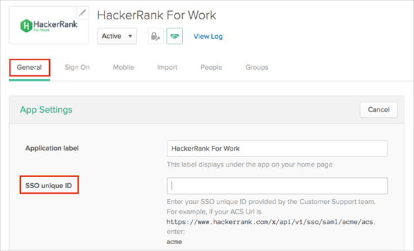
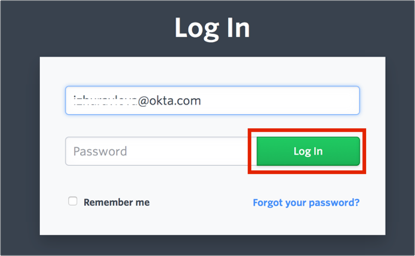

Send an email to the HackerRank support team at support@hackerrank.com and request that they enable SAML 2.0 for your account.
Include the following Metadata URL:
Sign into the Okta Admin dashboard to generate this value.
HackerRank will provide you with the Unique ID that you will need to enter in Okta (see next step).
In Okta, select the General tab for the HackerRank app, then click Edit.
Enter the Unique ID provided by HackerRank into the SSO unique ID.
Click Save.

Done!
Notes:
SP-initiated flows and IdP-initiated flows are supported.
Just In Time (JIT) provisioning is not supported.
